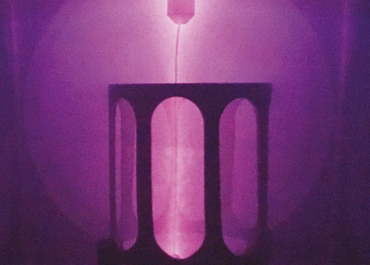

Проект Google не смог обнаружить холодный ядерный синтез
Компания Google опубликовала результаты работы проекта, в рамках которого несколько научных групп пытались воспроизвести опыты по холодному ядерному синтезу. Исследователям не удалось выявить избыточного выделения энергии, что в очередной раз опровергает доводы сторонников реальности этого эффекта. Тем не менее, авторы не считают свою работу бесполезной: в процессе появились полезные технические новинки и было сделано несколько открытий в материаловедении, которые могут пригодиться, например, в водородной энергетике, пишут они в журнале Nature.